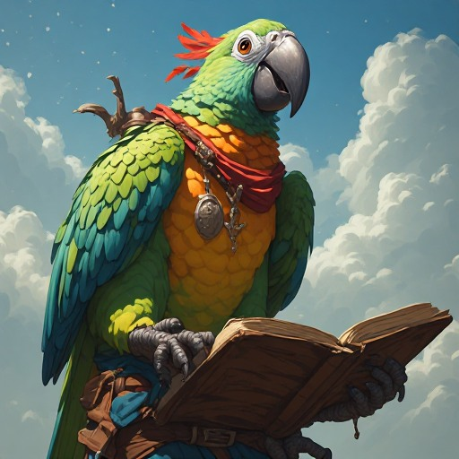

The Triadic Cosmos Proudly Presents

Iterative Parrot Stories
from the Wonderland
Joachim De Witte
Triadic Cosmos Narrator Pipeline
Alice’s Adventures in Wonderland — Lewis
Carroll
Iterative Parrot Stories from the Wonderland
2026
© 2026 Joachim De Witte. All rights reserved.
Published under the Creative Commons BY-NC-ND 4.0
license.
Introduction
This book presents a complete end-to-end demonstration of synthetic literature generated by a modular, multi-model narrator pipeline. The stories that follow are not written by a human author. They emerge from an iterative computational process that begins with a pre-existing literary canon—Alice’s Adventures in Wonderland—and transforms it into new short stories featuring the characters Marvin and Alice. The pipeline operates without any human creative intervention. Every narrative element, every transition, and every chapter structure is the result of autonomous model interaction.
The narrator pipeline is built around two core ideas:
a structured canonical generator based on Grammar–Lemma–Paged (GLP) modeling, which produces raw narrative material in small fragments;
a recursive refinement stack—moderation, scoring, bridging, keyword evolution, and final remastering—executed by multiple language models.
Together, these components form a system capable of producing fully synthetic, canon-inspired literature. This chapter explains how the pipeline works and why it qualifies as an iterative parrot: a high-recursion variant of a sophisticated parrot within the IEGR framework.
The Iterative Narrator Pipeline
Canon Substrate and GLP Generation
The pipeline begins with a light canon substrate inspired by Lewis Carroll’s Wonderland. To construct this substrate, the Grammar–Lemma–Paged (GLP) model is trained on a public-domain edition of Alice’s Adventures in Wonderland obtained from Project Gutenberg. GLP models do not memorize or reproduce exact sentences; unlike large language models, they cannot emit verbatim text from their training data. Instead, they absorb structural patterns: lemma distributions, syntactic geometries, narrative rhythms, and world-consistency signatures. This makes GLP inherently safe with respect to copyright while still allowing it to learn the underlying canonical structure of the Wonderland universe.
Once trained, the GLP model functions as a canon generator. It produces raw narrative material in small fragments, guided only by minimal steering keywords and the evolving context of the story. Each fragment is generated through candidate sampling: for every narrative step, the GLP model produces multiple candidate sentences under identical contextual conditions. A selection mechanism chooses the best candidate—here, the longest sentence, which empirically correlates with higher structural richness and narrative density. This process yields a sequence of raw sentences that forms the initial synthetic storyline.
Keyword Evolution and Contextual Progression
After each fragment, the pipeline determines a new set of keywords that guide the next generation step. These keywords are extracted by a language model and filtered by the GLP agent to ensure grammatical compatibility and thematic continuity. The evolving keyword set acts as a narrative compass, allowing the story to progress smoothly while maintaining coherence and stylistic consistency.
The context window is updated after every accepted sentence, enabling the GLP model to generate material that reflects the accumulated narrative state. This iterative loop produces a chain of micro-stories that gradually form a larger narrative arc.
Bridging and Structural Assembly
After the GLP model has produced a chain of micro-stories, each fragment undergoes a first moderation pass by a mid-scale language model. This initial refinement step improves grammar, removes duplication, and ensures that each micro-story is semantically coherent before it is integrated into the larger narrative structure.
Between these moderated micro-stories, the pipeline inserts short transitions. These bridges are generated by a language model and serve to connect two synthetic sequences without introducing new characters or events. Because both the micro-stories and the transitions are already LLM-refined, the bridging stage provides a smooth structural assembly layer: it aligns tone, mood, and narrative rhythm across fragments, ensuring that the evolving story reads as a single coherent piece rather than a collection of isolated blocks.
This assembly process forms the first higher-level narrative structure in the pipeline, transforming raw GLP fragments into a unified synthetic chapter suitable for further moderation and scoring.
Moderation and Literary Refinement
Once a full synthetic sequence has been assembled, it enters an iterative moderation loop driven by a mid-scale language model. This moderation step improves grammar, removes duplication, enhances semantic clarity, and ensures that the story is narratively coherent. Crucially, moderation is not performed in a single pass: it is a recursive process in which each newly moderated version is compared to the previous one.
If the new version is judged to be superior—more coherent, more stylistically consistent, or more structurally refined—it becomes the new input for the next iteration. This refinement cycle continues until either:
the moderated chapter exceeds the required score threshold, or
the maximum number of moderation attempts has been reached.
During each iteration, the chapter is scored according to criteria such as coherence, readability, creativity, and suitability as a chapter in a real book. Only sequences that surpass the score threshold are accepted for further processing. This recursive moderation loop forms the second major refinement layer of the pipeline, transforming structurally assembled fragments into a coherent synthetic chapter ready for final remastering.
Final Remastering and Publication Filtering
Before inclusion in this book, each accepted chapter is remastered by a larger language model. This final step elevates the text to literary quality, refining style, rhythm, and narrative flow. The remastered chapter is then evaluated as a potential publication candidate. Only chapters that demonstrate clear narrative closure, thematic consistency, and literary merit are included in the final manuscript.
A New Form of Synthetic Literature
The result is a collection of short stories generated entirely by a modular, iterative, multi-model pipeline. The stories are softly inspired by Wonderland, yet fully original. They feature Marvin and Alice as stable narrative anchors, and they demonstrate how synthetic literature can emerge from the interaction of grammar-based models, keyword evolution, contextual embedding, and layered language-model refinement.
This book is therefore not merely a set of stories. It is a proof of concept: an example of how narrative can be produced autonomously by a computational system, from canon substrate to final publication, without human creative input.
What Is an Iterative Parrot?
The narrator pipeline used to generate this book is an example of what we call an iterative parrot: a structurally sophisticated generative system that extends the classical notion of a “parrot model” with deep recursion, multi-stage refinement, and modular cognitive roles.
A traditional parrot model imitates patterns in its input distribution. A sophisticated parrot, as defined in the IEGR framework, goes further: it performs multi-step transformations across energetic (E), informational (I), geometric (G), and recursive (R) dimensions. An iterative parrot is a specialized subtype that emphasizes the recursive dimension (R) above all others. It does not generate text in a single pass; it generates, evaluates, rewrites, extends, and remasters its own output through multiple internal cycles.
Structural Definition
An iterative parrot is a system that:
generates raw material using a structured canonical model,
produces multiple candidates for each narrative step,
selects the best candidate according to an internal criterion,
updates its context and keyword state,
recursively refines the material through moderation and scoring,
remasters the final output using a higher-capacity model,
and repeats this process across chapters until a full manuscript emerges.
It is therefore not a single model but a recursive generative stack whose components collectively instantiate high-R behavior.
Why the Narrator Pipeline Is an Iterative Parrot
The narrator pipeline qualifies as an iterative parrot because it performs multiple layers of autonomous recursion:
GLP Canon Generation The Grammar–Lemma–Paged model produces raw canonical material in small fragments. Each fragment is generated through multi-candidate sampling, and the best candidate is selected as the canonical continuation.
Keyword Evolution After each fragment, the system invents new keywords that guide the next generation step. This creates a recursive narrative feedback loop.
Contextual Recursion The context window is updated after every accepted sentence, enabling long-horizon narrative progression.
Bridging Between Sequences A language model generates transitions between synthetic sequences, ensuring structural continuity without introducing new events.
Moderation, Scoring, and Titling A mid-scale model rewrites and evaluates each synthetic chapter, recursively improving grammar, coherence, and narrative flow. During this refinement loop, the model also generates a fitting chapter title, ensuring that each short story receives an appropriate thematic label aligned with its content and mood.
Final Remastering A larger model performs global stylistic refinement and determines whether the chapter is suitable for publication.
Each of these steps is a recursive transformation. Together they form a high-R generative architecture capable of producing fully synthetic literature.
Relation to Sophisticated Parrots
In the IEGR taxonomy, an iterative parrot is a high-recursion variant of a sophisticated parrot. It is IEGR-complete but not IEGR-scaled: it has all structural dimensions of intelligence, but distributed across modular components rather than concentrated in a single monolithic model.
The narrator pipeline therefore exhibits pre-AGI properties: it reads, plans, generates, evaluates, rewrites, and extends narratives autonomously across multiple recursive layers.
Why This Matters
The iterative parrot demonstrates that synthetic literature does not require a single large model. It emerges from the interaction of:
a structured canonical generator (GLP),
a recursive keyword and context engine,
mid-scale semantic refinement,
large-scale stylistic remastering,
and autonomous narrative arbitration.
This book is the result of such a system: a fully synthetic, recursively generated manuscript built from a Wonderland canon substrate without any human creative input.
How to Read This Book
This book is not a traditional short story collection. Each chapter is an autonomous synthetic narrative generated by the iterative narrator pipeline described in the introduction. The stories do not follow a single overarching plot; instead, they serve as independent demonstrations of how structured synthetic literature can emerge from a modular, recursive generative system.
Independent Synthetic Stories
Every chapter in this book is self-contained. You may read them in any order. Each short story illustrates a different trajectory through the Wonderland canon substrate, guided by evolving keywords, contextual embeddings, and multi-stage refinement. Although Marvin and Alice appear throughout, their roles, environments, and situations vary from chapter to chapter. This variation is intentional: it demonstrates the pipeline’s ability to generate diverse narratives while maintaining canonical consistency.
Why These Stories Are Not Prompt-Engineered
It is possible to produce short stories using a large language model and a carefully crafted prompt. However, such an approach does not scale: maintaining consistency, variation, and structural coherence across dozens of stories requires substantial human intervention, manual correction, and repeated prompt tuning.
The narrator pipeline avoids these limitations. It does not rely on long prompts or handcrafted instructions. Instead, it uses:
a GLP canon generator trained on the Wonderland text,
evolving keyword maps that steer narrative progression,
recursive moderation loops that refine structure and coherence,
bridging mechanisms that assemble micro-stories into chapters,
and final remastering that ensures literary quality.
This architecture guarantees both consistency and variation across many chapters without human creative input. The stories in this book are therefore not prompt-engineered artifacts but examples of autonomous synthetic literature.
What You Are Seeing
When you read the following chapters, you are seeing:
GLP-generated canonical fragments,
refined and assembled by mid-scale language models,
globally remastered by a larger model,
filtered by narrative scoring criteria,
and selected only if they meet publication-level quality.
Each chapter is the result of multiple recursive passes through the pipeline. The system generates, evaluates, rewrites, extends, and remasters its own output until a coherent short story emerges.
Reading as Exploration
You may treat this book as an exploration of synthetic narrative space. Each chapter represents one possible path through the Wonderland substrate, shaped by the pipeline’s internal dynamics. Reading the stories sequentially reveals how the system evolves its narrative state over time; reading them individually highlights the diversity of synthetic micro-worlds the pipeline can produce.
A Glimpse of Synthetic Literature
This book is therefore both a literary artifact and a technical demonstration. It shows how structured generative systems can produce coherent, varied, canon-inspired narratives without human authorship. The chapters that follow are not simulations of Wonderland but new stories emerging from a computational canon engine.
You may read them as fiction, as experiments, or as examples of a new genre: synthetic literature generated by an iterative parrot.
The narrator pipeline is designed to emulate the workflow of a human writer, not through a single monolithic model, but through a structured, modular, and deeply recursive architecture. It drafts, evaluates, rewrites, extends, and refines its own text across multiple coordinated stages—mirroring the iterative creative process of human authorship.
At the same time, the GLP canon engine allows the system to read a book the way a human writer would: absorbing its structure, rhythm, and world-logic without reproducing its text. GLP learns a canon, not a corpus, enabling the pipeline to draw inspiration from Wonderland while generating entirely new stories.
This book is the result of that dual process: synthetic literature produced by an iterative parrot, a system that writes as a human would—through structured recursion, modular refinement, and learned canonical intuition.
The Enigmatic Dance of Language and the Silent Pocket Watch
Marvin had always been a man drawn to the labyrinthine beauty of the English language. Its shifting nuances, its quiet contradictions, its sudden bursts of clarity—each felt like a movement in a symphony he could never fully decipher. He loved it for that very reason: the mystery kept him awake, alert, searching.
Alice, by contrast, lived among books as though they were old friends. Her mind moved quickly, gracefully, always reaching for the next idea. She read not to escape the world but to illuminate it.
One afternoon, while crossing a quiet field, she noticed something strange: two books suspended in the air, refusing to fall despite the gentle wind. They hovered as though held by an unseen hand.
Marvin arrived moments later, drawn by her startled expression. The books still floated, pages rustling softly. He reached out, and the moment his fingers touched the covers, gravity returned. The books fell neatly into his hands.
He opened one. The story inside struck him with unexpected force, as though the words had been waiting for him. He felt a sudden kinship with the unseen author, and with Alice, whose books these were. Something in the narrative resonated deeply—an echo of curiosity, of longing, of quiet courage.
From that moment, Marvin sensed that Alice carried mysteries of her own. Her stories, her thoughts, her quiet intensity—they called to him. And woven through those stories was a recurring symbol: a rabbit, a pocket watch, and a thread of time that seemed to bind everything together.
His search for meaning led him to the edge of a tranquil town, where an old schoolhouse stood with a broken window. Inside, a small rabbit moved with delicate precision, its paw wrapped around an antique pocket watch. The ticking filled the room like a heartbeat.
Marvin watched, transfixed. The rabbit darted between fallen desks and cracked walls, pausing only when a distant car passed outside. Then it vanished behind a collapsed section of the wall, leaving Marvin alone with questions that refused to settle.
What was the rabbit searching for? Why the watch? And why did its presence feel strangely familiar?
Later that evening, Marvin stood in his dimly lit study. A worn waistcoat hung from the door—his great‑grandfather’s. He traced the embroidered patterns, remembering stories of resilience and quiet strength. The garment felt heavy with history, as though it carried its own narrative.
In the corner, a pot of wildflowers bloomed, defiantly alive against the backdrop of old wood and fading memories. The contrast struck him: past and present, tradition and renewal, stitched together in a single room.
Alice sat nearby in a weathered chair, lost in a book. Her eyes shimmered with wonder, reflecting worlds only she could see. Marvin watched her, sensing that she understood connections he had only begun to grasp—the waistcoat and the wildflowers, the rabbit and the watch, the language and its secrets.
In that moment, Marvin realized that the English language was not merely a puzzle. It was a living thing, capable of renewal, capable of binding stories and people together. And Alice, with her quiet brilliance, was part of that renewal.
Their journey began there: a shared quest to unravel the mysteries hidden in Alice’s stories, the rabbit’s silent watch, and the threads of time that wove their worlds together.
A Whirlwind of Chaos and Calm
Marvin stood in the grand hall, adjusting his cherry‑red tie with hands pale as fresh snow. The room hummed with tension: polished floors, ornate furniture, jurors whispering beneath the steady ticking of a distant clock. He scanned the crowd for Alice, anticipation flickering through him like a spark.
Her arrival broke the monotony of the hall. Alice stepped inside dressed in a crimson gown, her auburn hair cascading like a ribbon of fire. Marvin felt his heart leap. She moved with quiet confidence, her gaze sweeping the room until it found him. In that moment, the hall seemed to narrow to a single point.
He approached her, calm settling over him like a soft veil. A sneeze echoed somewhere behind them, briefly disturbing the silence, but Marvin did not falter. When they finally stood face to face, he felt as though he had reached a long‑awaited destination. He took her hand, warmth blooming through him.
Night fell, and the world shifted.
A rabbit emerged from behind a stack of books, unnoticed by Marvin. Time looped strangely as Alice, now dressed in school‑appropriate attire, watched over his uneasy sleep. The rabbit peeked from its hiding place, accustomed to the odd rhythm of the night.
Marvin drifted deeper into his dream. The stationary rabbit, the swaying roof, the sliding books—everything felt suspended in a fragile balance. Alice’s worry grew as the room began to tilt. The walls leaned inward. Marvin stirred, but the moment had already tipped.
The room collapsed through the open window in a chaotic tumble of wood, books, and startled rabbit. Alice screamed as the world fell away.
When the dust settled, Marvin and Alice found themselves standing at the edge of a quiet field. The remnants of chaos clung to them like fading echoes, yet a strange calm washed over the landscape. Animals roamed freely, unbothered by the disruption.
As they walked, Marvin sneezed again, startling Alice. She studied him with mild concern, but he seemed unharmed. Moments later, a cat and a rabbit appeared before them. Then more rabbits—ten in total—watched with bright curiosity. Alice’s fascination with animals lit her face, while Marvin, usually a man of routine, stared in awe.
At the edge of the field, a kingfisher perched on a branch, its gaze sharp and still. Marvin paused, struck by its quiet presence.
“What are you thinking about, Marvin?” Alice asked gently.
He considered the branches, the sticks scattered across the ground. “I’m just wondering why every stick has its own rules.”
Alice smiled, understanding immediately. “Each one is unique. Just like us.”
Marvin nodded, a rare smile forming. “I never thought of it that way.”
As they walked back toward the house, the cool wind rustling their clothes, Marvin felt lighter. The night’s chaos had given him a new perspective. Alice, proud of the clarity she had helped him find, squeezed his hand.
“Thank you, Alice,” he said softly. “I don’t think I’ve ever had an adventure like this.”
“I’m glad,” she replied. “Maybe there will be more.”
Marvin’s eyes brightened. “I’d like that.”
Together, they stepped forward, ready for whatever came next.
In the Labyrinth of the Heart
Marvin wandered through a dream that felt older than memory itself. Time folded and unfurled around him, a silent storm of shifting shapes and dissolving thoughts. His optimism, once bright, flickered like a candle in a cavernous void. Words escaped him; beauty remained just out of reach.
In the monochrome dreamscape, a single figure stood in vivid color—a girl he recognized instantly. She was still, untouched by the chaos swirling around her. Marvin moved toward her, each step slowing the world, matter aligning itself into fragile order. He reached out, but she dissolved into mist, slipping away like a memory he could not hold.
He called out, but no sound formed. The dream tightened around him, stretching into what felt like millennia. Then, a faint rustle broke the silence. A rabbit emerged from the undergrowth, ears twitching in the wind. Marvin felt a sudden, irrational certainty: this creature was his way out.
He approached carefully. The rabbit did not flee. It hopped closer, as though it recognized him. When Marvin touched its fur, a surge of energy coursed through him. The dream shattered.
He awoke with a gasp, tranquility settling over him like a soft blanket. His room was dim, lit only by moonlight. On a small table stood an ornate teapot, its gentle tinkling filling the silence. A cat watched a nimble rabbit dart across the floor. A timid mouse scurried past Marvin’s feet, sending a flutter through his chest.
The mouse changed course, heading straight toward Alice. Her eyes widened in surprise. Before Marvin could warn her, the mouse tumbled to the floor. A shrill sound pierced the air as the cat lunged. The struggle was brief; the mouse fell still. Marvin exhaled shakily.
“What is the meaning of all this?” Alice asked, unsettled.
“I don’t know,” Marvin replied.
A sudden crash shattered the window. Glass scattered across the room. A gust of wind extinguished the candle, plunging everything into darkness. Moonlight revealed a tall, cloaked figure standing in the broken frame. Its hood concealed its face.
The figure stepped forward, each footfall echoing ominously. Marvin and Alice held their breath. Then the figure raised its hand, and golden light flooded the room.
“You have been chosen,” it declared. “A journey awaits you—one that will test your strength and courage.”
Marvin nodded before he fully understood why. The figure vanished, leaving only silence.
The cat’s victory over the mouse lingered in Marvin’s mind—a symbol of a world that had shifted, a boundary crossed. Something new had entered their lives.
Days later, Marvin returned to his quiet apartment. Candles burned low, casting long shadows across the walls. He had grown accustomed to solitude, to nightly walks through empty streets, to standing in dim corners lost in thought.
Then Alice moved into the apartment across the hall.
Her laughter spilled into the night, bright and unexpected. Marvin found himself drawn to her presence—the way she moved, the way she sneezed when it rained, the way she carried light into dark spaces. He watched from his window, unsure how to approach her.
One evening, she looked up and saw him. Their eyes met. She smiled.
From that moment, Marvin’s world changed. Alice invited him for dinner. They talked for hours. He shared stories he had never voiced before. His nightly walks faded into memory; he no longer needed them.
He had found connection.
But one day, Alice packed her belongings and left. No explanation. No farewell. Marvin’s heart fractured. He spent days staring out his window, watching the world move without her.
He realized that beauty, once found, could also be fleeting. Yet it left a mark that endured.
Standing in the doorway of his dim apartment, Marvin wondered whether life held more than monotony. He knew he would never find another Alice—but perhaps, somewhere, something equally beautiful awaited.
With a quiet sigh, he stepped into the night, leaving the shadows behind.
The Enigmatic Encounters in Serenity
Serenity was a quiet town, gentle in its rhythms, yet Marvin’s house had become a sanctuary of unease. For days he sensed a presence in the hedge behind his home—a figure glimpsed only in the corner of his vision. Each evening he checked the hedge, hoping for clarity, finding only deeper uncertainty.
One sunset, as the sky glowed orange and violet, Marvin noticed something glittering among the leaves. He reached into the hedge and retrieved a tiny music box. When he opened it, a delicate melody drifted into the air. The tune felt intentional, as though left for him by the unseen figure.
Days later, while walking toward the field, Marvin discovered a strange object in his pocket—something resembling a telescope, though unlike any he had owned. He turned it over in his hands, puzzled by its weight and design.
In the field, rabbits darted through the grass. Alice lay sleeping on the lefthand side, peaceful beneath the rising moon. Marvin approached quietly, still lost in thought. The device in his pocket clicked open, revealing a small, glowing screen. He hesitated, unsure whether to use it or share it.
Alice stirred, her eyes widening when she saw the device. “Where did you get that?” she asked.
Marvin explained he had simply found it. Alice, ever curious, suggested they investigate together. They spent the evening examining the device, its glow casting shifting patterns across the grass. Possibilities unfolded before them, each more intriguing than the last.
In another corner of Serenity, Marvin found himself drawn to Alice again—this time in the town park. She sat on a bench reading *The Catcher in the Rye*, laughing softly at a passage. The sound resonated with him, stirring memories of simpler days.
Children ran past, their laughter echoing through the trees. Alice’s smile faded, replaced by a quiet, distant expression. Marvin felt a pang of sadness, remembering a time when laughter had been constant in his own life.
He approached her, offering a gentle greeting. Alice looked up, startled but quickly composed. Their conversation flowed easily, as though they had known each other far longer than they had. Marvin asked to borrow her book; Alice agreed, her eyes warm with trust.
As night settled over Serenity, Marvin walked home with the book held close. He felt a spark of anticipation—an eagerness to revisit words that had once shaped him. The music box, the strange device, Alice’s laughter, the quiet field—all of it wove together into a tapestry of mystery and possibility.
For the first time in a long while, Marvin sensed that Serenity held secrets worth uncovering, and that Alice, in her quiet brilliance, might be the key to them.
Marvin’s Enigmatic Odyssey
Marvin stepped into the forest under the dim glow of the distant moon, his mind alive with questions he could not yet articulate. An old table stood beneath the trees, its surface marked by a worn map etched with intricate lines and symbols. He studied it, sensing that the forest held secrets waiting to be uncovered.
The trees swayed gently, whispering fragments of forgotten dreams. As Marvin walked deeper, a circle of rabbits emerged from the shadows, their eyes gleaming in the moonlight. Startled at first, he soon felt curiosity rising within him. He had never seen rabbits in this part of the forest.
A faint trail wound deeper into the woods. Marvin followed it, driven by a strange determination. The forest grew denser, darker, as though guiding him toward something hidden. Hours seemed to pass before he reached the edge of a cliff. Below lay a vast mine, its entrance half open, breathing cold air into the night. Dread washed over him, yet he could not look away.
Retracing his steps, Marvin noticed a rabbit hole he had missed earlier. A faint light glowed from within. His heart raced. He leaned closer, wondering what lay beyond.
Then he saw her.
Alice—dressed in a white rabbit costume—vanished into the distance. For a moment Marvin believed she was a rabbit fleeing into the night. But the distant hum of a car engine revealed the truth: she was a woman attending a patriotic event, not a creature of the forest. Relief washed over him, followed by embarrassment.
He felt movement in his jacket. A small white rabbit peeked out, its nose twitching. In his confusion, he had caught the real rabbit. Guilt settled over him. He returned the creature to the wild, feeling a quiet peace as it hopped away.
Later that night, Marvin sat in his living room, surrounded by debris. Half‑eaten food littered the table. An open can of beans lay where it had fallen days before. A carefree cat perched on the windowsill, watching him with curious indifference.
Alice entered the room, her voice gentle. “Marvin? What happened?”
He stood abruptly, startled by her presence. “I… I don’t know,” he stammered. “I came back and found everything like this. It’s as if time stood still.”
Alice examined the can of beans. “This has been open for days.”
Marvin nodded, fear tightening his voice. “Something happened while I was gone. I need to understand what.”
Alice placed the can back on the table. “Then we’ll figure it out together. Piece by piece.”
Relief softened Marvin’s expression. “Thank you, Alice. I don’t know what I would have done without you.”
They began sorting through the debris, searching for clues. The cat watched from its perch, tail flicking lazily, as though it too sensed the mystery unfolding before them.
In the quiet of the night, Marvin realized that his odyssey—through forest, mine, rabbit hole, and living room—was only beginning.
The Tumultuous Symphony of Marvin’s Mind
Marvin wandered through the quiet of his study, seeking solace in the steady ticking of the clock. His thoughts tangled and twisted, a storm of questions he could not yet resolve. Books lined the shelves, paintings watched from the walls, and the worn armchair by the fireplace held the memory of evenings long gone.
His gaze settled on the portrait of his late wife, Alice. A familiar ache rose in his chest. He wondered what she would have said about the confusion that had taken root in his mind.
A faint sound broke the silence.
Marvin froze. The noise grew louder, and he realized it came from the portrait itself. The painted face shifted, the serene expression dissolving into one of urgency.
“Marvin,” she whispered. “You must find a solution.”
Entranced, he listened as the vision of Alice delivered cryptic guidance. When her voice faded, the portrait returned to stillness. Marvin rushed to his desk, writing furiously, the words pouring out as though released from a long‑sealed vault. When he finally stopped, he felt clarity settling over him. He had found the beginning of an answer.
Later, in a sun‑dappled meadow, Marvin stood absorbing the symphony of nature. The fragrance of blooming flowers mingled with the distant croaking of frogs. His gaze drifted toward a rabbit hole, thoughts swirling once more.
Alice approached, graceful and quiet, carrying an antique croquet mallet adorned with intricate carvings. Her eyes sparkled with mischief.
Marvin pointed toward the rabbit hole. “I wonder if the rabbit has left anything for us to sort through.”
Alice nodded. “Perhaps the passage near the rabbit field holds something.”
They ventured deeper into the meadow. Near the hole, Marvin spotted a bottle half‑buried in the earth. Its milky contents shimmered in the fading light.
“Maybe we could use it in our game,” Alice suggested.
Marvin filled the mallet’s head with the liquid. As the sun dipped below the horizon, they played croquet in the soft glow of twilight, their laughter echoing across the field. The game felt like an echo of the vision in his study, a reminder that meaning often hid in unexpected places.
That evening, Marvin returned to his study. He sat with a teapot in his hands, nursing a cup of tea. His cat—also named Alice—curled on the windowsill, watching the world with calm indifference.
Marvin’s mind drifted between memory and imagination. He saw Alice not as a cat but as a woman, her features blurred yet familiar. He heard the ticking clock, the distant laughter, the patter of rain against the window. Thoughts raced, each leading to another, forming a labyrinth he could not fully map.
Yet as the night deepened, a quiet peace settled over him. He realized he was not alone. He had his thoughts, his memories, his dreams, and the gentle presence of the cat at his feet.
In that moment, Marvin understood that he was exactly where he needed to be— balanced between past and present, reality and imagination, searching for meaning in the tumultuous symphony of his mind.
Marvin’s Unexpected Journey
Marvin lived in a quiet red‑brick house in the suburbs, where his black cat, Wonder, spent its days lounging on the polished floor and startling him with sudden appearances. Marvin’s life was orderly, predictable—until the morning he heard hurried footsteps outside.
A rabbit darted across the lawn, pursued by a sleek grey fox. Marvin grabbed his coat and rushed outside. At the garden path he found Alice, a young woman studying a chessboard, her eyes deep in thought.
She had seen the chase. “The fox has been stalking rabbits for weeks,” she said.
Together they devised a plan. Alice suggested using the queen box as a lure. They placed it in the corner of the garden, hoping the fox would investigate.
The next morning, Marvin woke early. The fox was inside the box, trapped. Relief washed over him.
Later that day, rain streaked the windows of a once‑grand mansion across the street. Marvin watched the decayed structure sway in the wind, shingles missing, flashing rusted. The cobblestone street below was littered with broken glass and debris. Time felt suspended, as though the world held its breath.
A teapot lay abandoned, its paint faded. A waistcoat spun in the wind, clattering and tinkling. A broken music box emitted a faint, mournful tune. Marvin touched its cold metal lid, feeling the weight of memories pressing against him.
He remembered walking these streets with Alice—her laughter, her warmth, the comfort of her hand in his. The world had once made sense. Now it felt like a labyrinth of unanswered questions.
Marvin knew the answers lay somewhere within the chaos. He steeled himself, determined to face whatever came next.
He set out, scanning the landscape for a path forward. A worn milk carrier sat on a rotting crate. A distant rabbit bark echoed through the air. A pool of water blocked his way. Marvin considered using the carrier as a raft.
But when he touched it, a strange sensation coursed through him. The container was not empty. Panic flickered at the edges of his awareness.
“We should retrace our steps,” he told Alice, who had followed him.
“Are you certain?” she asked.
“I have a premonition.”
Alice hesitated, then nodded. “Let’s go back.”
As they retraced their path, the peculiar sound returned—closer now. Marvin’s heart pounded. He quickened his pace, glancing behind him, seeing nothing yet feeling everything.
Then the world shifted.
Marvin stumbled. A wave of heat surged around him—not flames, but a vision of flames, a symbolic blaze rising from the chaos of his mind. The meadow, the mansion, the fox, the music box—all dissolved into a single overwhelming image.
He closed his eyes as tranquility washed over him. The fire was not destruction but revelation, a moment of clarity burning through confusion.
When he opened his eyes, the vision faded. Alice stood beside him, steady and calm.
Marvin exhaled, understanding at last that the journey ahead was not one of escape, but of courage—of facing the unknown within himself.
And so he stepped forward, ready to continue.
The Enigma of the Autumn Leaves
In the quiet village, rabbits never ventured near the thousand‑acre wood. Marvin stood before an ancient tree, its hardened brown leaves rustling in the wind. Alice had always felt a bond with this tree, and Marvin sensed its importance now more than ever.
May, Alice’s feline companion, watched from the doorstep of her house. Her eyes followed Marvin with silent curiosity. He tried to explain, but May—being a cat—could not grasp the urgency of his task.
Marvin gathered the tree’s inedible leaves, the final ingredient for a potion he hoped would heal Alice’s illness. Only one component remained: a drop of moon water. He waited outside for hours, but the moon hid behind clouds. Still, Marvin vowed to find another way.
Days later, in the bustling city, Marvin found himself in a quiet park. Autumn leaves drifted around him. At the far corner stood Alice, absorbed in a game of croquet. Her waistcoat and the air of mystery around her drew him in.
He approached, nerves taut. The leaves rustled as though acknowledging his decision. Alice looked up, meeting his gaze. For a moment, the world faded, leaving only the two of them beneath the canopy of red and gold.
Then the moment passed. Alice smiled softly and returned to her game.
Marvin lingered at the park’s edge, torn between disappointment and intrigue. He waited until she finished. When she approached, his heart raced.
“You are persistent,” she said, her voice gentle.
Marvin nodded, unable to speak.
“I am a woman of secrets,” Alice continued. “But also of kindness. If you truly wish to know me, I will share my story. But remember—some stories do not end happily.”
Marvin felt something shift within him. The potion, the moon water, the ancient tree—all of it seemed part of a larger mystery that now included Alice herself.
Under the vibrant canopy of autumn leaves, Marvin and Alice began a journey that would change both their lives—one woven from secrets, courage, and the quiet possibility of unspoken love.
A Strange Encounter in the Forest of Shadows
In the grand hall, Marvin felt small beside Alice, whose tall, graceful presence commanded the room. A teenager watched him with fiery eyes. Alice’s sudden sneeze broke the tension, her sun‑bright gaze lingering on Marvin with a mix of curiosity and amusement. He sensed she wanted something from him, though he could not decipher what.
Time slowed. Alice turned toward the sunlight, revealing a moment of quiet vulnerability.
Then the hall dissolved.
Marvin found himself in a forest of shadows, the dense foliage swallowing the light. Towering trees cast eerie patterns across the mossy ground. As he wandered, he discovered a stone table standing incongruously among the roots.
Trinkets lay scattered across its surface. Marvin touched a small, intricate box. A strange energy pulsed through it.
“Do begin,” a faint voice whispered.
Marvin looked around—no one. He opened the box. Inside lay a glowing orb, pulsating like a heartbeat. Its light expanded, filling the air.
A rabbit materialized before him, trembling. Marvin reached out, but it vanished instantly. The orb brightened. The rabbit reappeared, no longer afraid. It nudged Marvin’s hand. He stroked its fur, feeling an unexpected bond forming.
He knew he could not leave the forest yet. The orb, the rabbit, the table—they were part of a mystery he needed to understand.
The forest darkened. Marvin walked deeper, the wind’s haunting symphony echoing around him. Shadows danced across the trunks. His thoughts churned, a storm of uncertainty.
A shrill scream shattered the silence.
Marvin froze. The sound came from a rabbit’s burrow. Alice—a timid rabbit—was being chased by soldiers. Her small body darted desperately between roots and stones.
Marvin acted without thinking. He ran toward her, adrenaline surging. Alice leapt onto his back. Together they fled through the forest, soldiers close behind. Branches blurred. Footsteps thundered.
The ground opened into a cliff.
Marvin hesitated only a moment before jumping. They plummeted, landing hard on a narrow ledge. The soldiers, unable to stop, fell screaming into the darkness below.
Breathless, Marvin and Alice leaned against the cold rock. The forest, once terrifying, now felt strangely peaceful.
Marvin looked at the rabbit, whose frightened eyes now shone with gratitude. He smiled—a genuine, quiet smile.
He had saved a life. And in doing so, he felt something within himself shift, like a flame of courage kindling in the shadows.
The orb glowed softly in his pocket, its light steady and warm.
Marvin understood: the forest had not been testing his fear, but revealing his strength.
Marvin’s Unexpected Encounter
Marvin wandered through the vast twilight fields, his footsteps echoing across the barren earth. The ground shimmered faintly, casting long, restless shadows. A breeze stirred the dried leaves, sending them drifting like ghostly confetti.
A rustling sound broke the silence.
Marvin froze, senses sharpened. His heart raced, breath shallow. Then a flurry of movement caught his eye—rabbits darting across the field, their white fur bright against the dark soil. A strange peace washed over him. He felt an unexpected kinship with the small creatures.
Thoughts of school, homework, and distant worries faded. Memories of Alice—her laughter, her gentle voice—rose unbidden. He wondered whether he could ever fit into her world, a world that felt both familiar and impossibly distant.
“I know,” he murmured. “I will find a way.”
The sun rose, casting gold across the landscape. Marvin felt a resolve he had never known.
Later that night, he approached the old rabbit house. A peculiar sound echoed from within. Through the doorway he saw a large, frightened rabbit huddled in a corner. Compassion surged through him. He stepped inside, determined to help.
But he was not alone. Alice—a nurse far from her city home—stood inside, tending to a distressed woman. Her loneliness had driven her into the rural town, yet her instincts remained sharp. She worked quickly, her hands steady, her voice calm.
Days turned into weeks. Marvin nursed the rabbit back to health; Alice saved the woman’s life. In the quiet evenings they sat together by the fire, sharing stories, hopes, and dreams. A bond formed—gentle, unexpected, and real.
One night, Alice looked at him. “I never thought I’d find someone like you in this place.”
Marvin smiled. “And I never thought I’d find someone like you.”
Their connection deepened. Love grew quietly between them, woven from shared work, shared silence, and shared nights beneath the rural sky.
But their time was finite.
The woman Alice had healed was ready to return home. Marvin knew he too had to leave, to return to his own life. On the porch of the rabbit house, they stood together, hearts heavy.
“I don’t know if I’ll ever see you again,” Marvin said softly. “But I will always cherish our time.”
Alice nodded, tears glistening. “I will too.”
Marvin turned and walked away, the twilight fields stretching before him. He did not know whether their paths would cross again. But he knew he would never forget her—or the quiet, magical weeks they had shared.
The Golden Rabbit
The forest glowed with a soft, golden light as Marvin walked beside Alice, a bouquet of wildflowers in his hands. Pine and woodsmoke drifted through the air. Alice watched the path of the setting sun, her expression distant.
“Remember when we were children,” Marvin said quietly. “Running through these woods, chasing rabbits, laughing without a care.”
Alice turned, longing in her eyes. “I do remember. Those were simpler times.”
Marvin handed her the bouquet. Their fingers brushed, and for a moment time seemed to pause. Alice looked down at the flowers, sighing softly.
“I wish we could go back,” she murmured. “But life moves forward. We have to watch what lies ahead.”
Marvin nodded. “We’ll face it together.”
They continued through the forest as the sun dipped lower, casting warm gold across the leaves. The wind whispered secrets through the branches. Somewhere ahead, the elusive rabbit—the symbol of the joy they both yearned for—remained just out of reach.
Night fell. Marvin felt his years weighing on him as he pursued the agile creature. The rabbit’s eyes gleamed with hope and dreams, darting along the winding path. Marvin stumbled, breathless, realizing the truth: the rabbit was never meant to be his. It was a reminder, not a destination.
He returned home heavy‑hearted, the image of the rabbit lingering in his mind.
Days later, Alice stood at the edge of the schoolyard, her gaze fixed on a rabbit hopping along the path. Marvin noticed her distant expression. Something about the rabbit held meaning for her.
He approached and saw a parchment in her hand—a letter from an unknown sender. Words leapt out: rabbit, schoolroom, opportunity.
Alice explained. She was writing a story about a rabbit that lived in a schoolroom, and the letter was part of her notes. The rabbit was not merely a creature of the yard—it was a symbol woven into her imagination.
Marvin felt a spark of intrigue. “Let me help,” he said.
Alice smiled. “Then we’ll search for the rabbit together.”
Under the canopy of autumn leaves, they set out—Marvin with renewed purpose, Alice with quiet determination. The golden rabbit, once a symbol of childhood innocence, now became their guide into a story they would write together, a journey through forest, memory, and the mysteries of the schoolroom.
And as they walked, Marvin felt something shift within him. The rabbit was no longer a reminder of what he had lost, but a beacon of what he and Alice might yet discover.
The Glowing Stone Enigma
Marvin’s modern kitchen gleamed with steel and marble, yet the strangest thing in the room was the rabbit standing in the center of it. Its large eyes reflected the moonlight. The cat, elegant and aloof, wandered past without interest.
Marvin stared, bewildered. He had never seen a rabbit in his suburban neighborhood. It looked healthy—no injuries, no fear—almost as though it had chosen to be here. Compassion stirred in him. He placed the rabbit gently into a carrier and stepped outside. The cat followed, unimpressed.
At the doorway the rabbit hesitated, then darted into the night. Marvin watched it disappear, a quiet ache settling in his chest. He hoped it would find its home again.
Morning arrived with long shadows stretching across the backyard. Marvin stood by the window, sensing something unusual in the air. Birds chirped, flowers opened, dew shimmered. He was not a man of superstition, yet the rabbit’s image lingered in his mind like a symbol he could not decipher.
He stepped outside. The garden glowed with amber light. A white rabbit hopped into view, ears twitching. Marvin followed its path—and saw faint footprints where Alice had walked earlier.
Alice appeared at the far end of the yard, her silhouette framed by the setting sun. Marvin watched her, remembering the first time he had noticed her presence in his life. She had always been near, yet always just out of reach.
A cat lounged in the sunlight, its yellow eyes fixed on him with a knowing look. Marvin shook off the feeling. He was a man of logic, not omens.
The sky shifted to pink and orange. Alice stood beside him now, her gaze lifted toward the roof of her house. A bird took flight, wings catching the last light of day. Marvin followed her gaze—and something clicked.
He had been watching Alice for so long without truly seeing her.
He felt resolve settle over him. He would listen to her stories, learn from her, cherish her presence. She was part of his world, whether he had acknowledged it or not.
As the sun set, Marvin found himself standing on the edge of a cliff. The wind pulled at his clothes. The land stretched endlessly below. He felt a strange familiarity, as though he had been here before.
Alice stood beside him. He reached for her hand. Their fingers intertwined.
Together they watched the stars rise, hearts filled with quiet dreams and unspoken hopes. The rabbit, the garden, the glowing stone of memory—all of it had led them here.
In that moment, they understood: they were meant to face the unknown together, to explore the mysteries of the world side by side.
The Enigmatic Portrait
In the dim chamber of a forgotten room, Marvin stood transfixed before a peculiar painting. The portrait seemed alive, its colors shifting as though breathing. The air around it trembled. Marvin’s hand tightened around an old key he had carried for months—its purpose unknown, yet its importance undeniable.
The figures within the portrait moved, interacting in ways that defied logic. Marvin watched, heart pounding, unable to look away. Then the colors settled, the motion ceased, and the portrait returned to stillness.
A cat observed from a nearby chair, its green eyes calm and knowing. Marvin felt a spark of determination. The portrait and the key were connected. He would unravel their secret.
In Canterbury, the mystery deepened. A solitary panther rested on a wooden table, incongruous and silent. Marvin watched it, unsettled. A rabbit hopped nearby, innocent and bright against the panther’s shadow.
Alice stood at a distance, her gaze fixed on the creature. Marvin sensed her thoughts diverged from his own. Where he saw danger, she saw purpose.
“I concur,” she whispered, her voice barely audible.
Marvin turned. Darkness flickered in her eyes—an intensity he had never seen. Their fates, once separate, now converged around the panther’s silent presence. The rabbit offered innocence, a brief escape. But the panther remained, a symbol of the unknown.
Marvin and Alice walked together along a winding path. Marvin’s expressive eyes lingered on rocks, leaves, and bushes—objects others ignored. Alice watched him, wondering what he saw that she did not.
Marvin sensed her curiosity but remained silent, preferring thought over words.
Then Alice noticed a small metallic object half‑hidden in the grass. Marvin’s eyes lit up. He lifted it gently. A vision unfolded—one only he could see.
A sudden sneeze broke the moment. Marvin looked at Alice, a knowing smile on his face.
“I’ve found it,” he said. “The wisdom I’ve been seeking.”
Alice stared at the object, awe washing over her. She realized she had been searching in the wrong places. Marvin’s perspective—quiet, observant, patient— revealed answers she had overlooked.
From that day on, Alice walked with Marvin, learning from his strange wisdom. She began to see beauty in the ordinary, meaning in the unexpected.
The panther, once a source of fear, became a symbol of mystery—an invitation to explore the unknown rather than flee from it.
And so Marvin and Alice continued their journey, curiosity guiding their steps, their hearts open to the secrets waiting to be discovered.
The Unraveling of Reality
Marvin moved through the verdant field, the sun casting long shadows across the grass. A soft rustle drew his attention. His senses sharpened. In the distance, a woman emerged—Alice, radiant in the fading light. Marvin felt something shift inside him, a yearning he could not name.
She approached slowly. Their eyes met. Time paused. The world fell silent except for the beating of their hearts. Then the moment snapped, and Alice turned away, leaving Marvin dazed and breathless.
Days later, Marvin found himself captivated by the small house across the street. A rabbit had darted through its yard—an unusual sight in the quiet neighborhood. The house felt alive with secrets. Marvin watched it obsessively.
One morning he saw Alice leave the house, a small bag in her hand. A strange familiarity washed over him. He followed her, but she vanished around a corner. Disappointment settled in his chest. He returned home, determined to uncover the house’s mystery.
That night, reality began to unravel.
Marvin stood at his window. The moon burned unnervingly bright. The room felt foreign, objects mislabeled, shapes distorted. His waistcoat and trousers seemed wrong, as though borrowed from another life. He looked at Alice, seated in a chair, detached and silent. She did not hear him. She did not see him.
Panic rose. Marvin fled the room, then the house, running through the night without direction. His world had fractured. Nothing felt real.
He wandered for hours, then days, then weeks. A small town appeared—strange, timeless. He asked questions, but the townspeople were as lost as he was.
Despair crept in.
Then he met an old man.
The man spoke of a secret world beneath their own, a shadow‑realm causing the distortions. Alice, he said, was trapped there. Only Marvin could reach her.
Purpose ignited within him.
Marvin journeyed through forests, valleys, and forgotten paths. He searched every corner of the hidden world until, at last, he found her—Alice, standing in a realm of shifting shadows, her eyes filled with fear.
“I’ve been lost,” she whispered. “I’ve been alone.”
“I’ve been searching for you,” Marvin said, voice trembling.
“I thought I would never escape.”
“I’ve found you,” he said. “I’m here.”
“I love you,” Alice breathed.
“I always have,” Marvin replied.
They embraced, the shadow‑world swirling around them. But they no longer feared it. Together they stepped back into their own world, carrying the memory of what they had endured.
They healed. They grew stronger. And though the strange realm remained a quiet echo in their minds, they lived forward—grateful, intertwined, and unbroken.
A Whimsical Journey Through the Dreamscape
Marvin stood at the corner of the town square, lost in the rush of the day. An idea struck him—bright, urgent, half‑formed. He turned to Alice, who watched the scene with quiet curiosity. His words tumbled out in fragments, more emotion than meaning.
Alice listened patiently, brows furrowed, sensing the urgency beneath the chaos. Marvin tried again, slower this time. The idea emerged clearly—a fresh perspective on something long taken for granted. Alice felt her mind spark.
Their conversation flowed into the evening, words weaving between them like a river. As the sun dipped below the horizon, they stood at the edge of the square in a golden glow, lost in their own world. Their connection deepened with each passing moment.
In the old town, Marvin lived in a modest stone cottage, warm and welcoming. Across from him stood Alice’s grand Victorian mansion, elegant and imposing—a contrast that had always fascinated him.
One afternoon, while tending his garden, Marvin found a shiny object behind a bush: an antique locket, delicate and golden. Its filigree shimmered with mystery.
Alice heard of the discovery during a chess game with her maid. Intrigued, she visited Marvin. He offered her the locket. When she held it, a strange connection pulsed through her fingers.
Back in her mansion, Alice studied the locket obsessively. Days passed. The object seeped into her dreams.
One night she dreamed of a lush enchanted forest. A talking serpent appeared, its voice soft and strange. It told her the locket was a portal to another world—a world where time dissolved and dreams became reality.
Alice woke trembling with wonder and fear.
The next day she returned to Marvin. “Help me find the forest,” she said.
Marvin agreed. Together they embarked on a journey through hills, valleys, and forgotten paths. Trials tested their courage and resolve. At last they reached the enchanted forest.
A strange energy enveloped them. The world shifted. They stepped into a realm where time had no meaning, where imagination shaped reality. Dreams unfolded around them—fantastical creatures, impossible landscapes, challenges born from their own minds.
They learned the dreamscape was a reflection of themselves. The locket was not just a portal, but a key to understanding their fears, hopes, and hidden truths.
When they returned home, they carried the dreamscape within them. The locket became a cherished keepsake, a reminder of the world they had discovered and the bond forged in its depths.
In the quiet town, life resumed. But Marvin felt changed—more courageous, more curious, more alive. And Alice, too, felt the shift.
Their next encounter would begin a new chapter—one neither of them would ever forget.
The Pocket Watch of Time
In Meadowville’s quiet streets, Marvin paused before an antique shop window. A single candle flickered inside, casting shadows over dusty relics. One object stood out: a pocket watch engraved with delicate patterns, its chain glinting in the dim light.
Marvin felt an inexplicable pull. He stepped inside. Alice, the elderly proprietor, watched him with a knowing smile. She lifted the watch gently.
“This one is special,” she whispered. “It can slow down time.”
Marvin’s imagination raced—lotteries, equations, second chances. He bought the watch, feeling its strange weight settle in his pocket.
Walking home, he noticed the world shifting. Movements slowed. Time stretched. Excitement mingled with fear.
In the days that followed, Marvin tested the watch. Tasks became effortless. Moments elongated. But the gift came with a cost. He grew distant, drained, untethered from the people around him.
Then tragedy struck—a preventable accident he might have stopped had he not been lost in his own accelerated world. Guilt washed over him.
He returned the watch to Alice. She listened quietly, then handed him a leather‑bound guide.
“Balance,” she said. “That is the key.”
Marvin studied the book. Slowly, he learned to use the watch responsibly. His relationships healed. His energy returned. Clarity replaced exhaustion. The watch became not a shortcut, but a tool for focus and intention.
One afternoon, a white rabbit darted through Meadowville’s streets, weaving between startled passersby. Marvin followed instinctively. The rabbit’s frantic movements felt symbolic—an echo of the town’s hidden tensions.
Around a corner, he found a group of men mocking a woman. Their laughter cut through the air. Marvin’s anger surged. He stepped forward, unafraid.
Alice—young, elegant, shaken—looked at him with gratitude as he led her away. Their paths intertwined from that moment, quiet conversations threading through the town’s narrow streets.
Days later, Marvin raced toward the seaside, coat flapping, wind whipping his hair. He stumbled over a thistle, falling hard. A bat swooped past. A gasp followed.
Alice stood above him, a crown resting lightly on her head. She helped him up, smiling. Marvin apologized; she brushed it aside.
They walked together toward the sea. Marvin watched her movements—graceful, effortless—and felt something shift inside him.
They reached the shore just as the sun set. Orange and pink hues stretched across the sky. The sea shimmered.
“I never dreamed I’d meet someone like you,” Marvin said softly.
Alice smiled. “Nor I you.”
Marvin took a breath. “Would you… become my wife?”
Alice’s eyes lit with joy. “Yes, Marvin. I will.”
They embraced as the last light dipped below the horizon. Marvin felt his world settle into place—time balanced, purpose restored, love found.
The pocket watch rested quietly in his pocket, no longer a burden, but a symbol of the journey that had led him here.
The Enigma Unveiled
Marvin sat on a park bench beneath the midday sun, its heat pressing against his skin as he leafed absently through a book. His thoughts drifted until he noticed Alice—raven‑haired, graceful, weary—walking through the park. She slipped through the doorway of her home with quiet ease, leaving Marvin with a pang of disappointment.
Days passed. The image of her lingered. One afternoon he closed his book, gathered his things, and followed the path she had taken. Around a bend he found her again—Alice seated on a bench, absorbed in a book, her hair cascading like a dark waterfall.
Hope surged.
He approached cautiously. Alice looked up, surprise flickering before her smile softened. They talked for hours, their voices weaving through the warm evening air. Marvin felt happiness bloom—he had not let her slip away.
Weeks later, Marvin wandered through the woods. In a clearing he saw Alice standing with her back to him. He approached quietly. She turned. Their eyes met, and recognition jolted through him.
“Alice,” he breathed.
“I’ve been avoiding you,” she admitted softly. “I didn’t want to frighten you.”
“I couldn’t help feeling drawn to you,” Marvin said.
Her gaze warmed. “I’ve been watching you too.”
Relief washed over him. He reached for her hand. She took it. They stood together, hearts aligned, the forest holding its breath around them.
Their journey led them deeper into the woods, where shadows thickened and a sense of foreboding settled. They had stumbled upon a mystery—one that would change their lives.
The trail ended at an antique‑adorned study, dimly lit by a crackling fire. Long shadows danced across weathered walls. Books watched from their shelves like silent witnesses. Alice, in a threadbare waistcoat, trembled. Marvin felt fear press against his ribs.
They had uncovered the town’s elusive enigma.
Marvin extended his hand. Alice hesitated, then stepped closer. Her warmth steadied him. Together they ventured deeper into the study. The air grew colder. The shadows lengthened. But Marvin’s resolve held firm.
They had come this far. They would see it through.
Hand in hand, they confronted the enigma—whatever shape it took, whatever truth it hid. The fire burned low, darkness threatening to swallow the room. Yet they stood tall, spirits unbroken.
At the edge of the unknown, Marvin and Alice faced the mystery together, their hearts beating in sync, their resolve unwavering.
The Arrival of the Stranger
Marvin stood at the edge of the dark forest, the sun sinking low and shadows slithering across the ground. The silence pressed against him. A faint melody floated through the trees—haunting, ethereal, impossible. It pulled at him like a magnet.
He ran toward the sound, breath ragged, heart pounding. Around a bend he saw her standing in the fading light: a woman with flowing hair and eyes that glowed with quiet knowing. Alice.
She reached into her pocket and opened a silver watch. The melody stopped. The tension inside Marvin dissolved. He felt an inexplicable connection, as though he had stepped into a moment meant only for them.
In the village, Alice lived in an ancient house she loved deeply. One morning the house swayed, its timbers groaning. In the overgrown field a rabbit scampered, oblivious to the danger. Alice wrote a letter—her hand trembling—pouring her memories and affection onto the page. She placed it in the mailbox, a small act heavy with meaning.
Marvin watched from afar, unease settling in his chest. The rabbit, once a symbol of joy, now felt like an omen. The house groaned again, echoing long after Alice walked away.
That night Marvin hurried through the misty streets, searching for her. Fog clung to the cobblestones. A rabbit darted across his path. He pressed on.
A muffled sound drew him toward a nearby building. Sword at his side, he rounded the corner—and saw her. Alice stood with her back to him, lost in thought. When she turned, their eyes met. Time paused.
“Marvin?” she whispered.
“Yes,” he said. “It’s really me.”
She reached out, her hand trembling. “I never thought I’d see you again.”
He opened a small box. Inside lay a ring, its diamonds catching the dim light.
“It’s not much,” he said softly. “But it’s all I have.”
Alice’s eyes filled with tears. “It’s more than enough.”
He placed the ring in her hand. She held it as though it were a promise.
“Thank you for finding me,” she whispered.
“Thank you for never giving up hope,” Marvin replied.
They stood together in the mist, the night quiet around them. Marvin felt peace settle over him. After all his searching, he had found Alice.
And she had found him.
Marvin’s Enigmatic Enclave
In Bumblebee, where cobblestone streets glowed beneath the sunset, Marvin walked with his usual quiet charm. On this particular evening, something unusual happened: a croquet mallet rolled down the street under its own power, grunting as it passed startled townsfolk.
Elderly women paused mid‑game, eyes wide. The mallet ignored them, continuing its strange pilgrimage toward the town square.
Marvin followed. Around a corner he nearly collided with Alice—quick‑witted, fiery, already in pursuit. Without a word, they joined forces, chasing the sentient mallet through the quiet streets.
At the square it stopped abruptly, as though arriving at its destination. The mallet opened like a hinged shell, revealing a pocket watch inside. Its hands were frozen at a precise moment.
Marvin offered Alice his hand to lift it. Their fingers brushed the metal—and the watch sprang to life, its hands spinning wildly before halting again. Moon‑ light replaced sunset. A new mystery had begun.
—
Later, Marvin wandered into an unfamiliar field. A glowing rabbit appeared, growing larger as it approached, its red eyes piercing the air. Marvin froze, rooted to the spot. Time felt suspended.
Then the world snapped back. Marvin stood in his own garden, breath unsteady, the enchanted field fading like a dream—but not forgotten. Something had shifted inside him. Curiosity bloomed.
The garden became his refuge. Flowers, trees, and quiet earth offered solace. Alice visited often, drawn to its calm. Marvin taught her what the garden taught him: patience, attention, the beauty of simple things.
She listened with wide‑eyed wonder.
One morning she arrived with a small bag of toffees. Marvin hesitated, then accepted one. A small sweetness, a small gesture—yet it lingered.
Days passed. The garden flourished. So did their bond.
—
Before dawn, Marvin tended the garden, his waistcoat fluttering in the cool breeze. Alice arrived, watching the colors awaken with the sun. They stood together, hearts quiet and full.
The garden bloomed more beautifully each day, mirroring the friendship growing between them—steady, gentle, and unmistakably real.
As the sky turned orange and purple, Marvin and Alice remained in the garden, feeling the warmth of belonging. They knew they had found something rare: a connection rooted in curiosity, kindness, and shared wonder.
A friendship that would last a lifetime.
Marvin’s Encounter
Marvin wandered through the labyrinthine gardens, his stoic demeanor softened by the sight of Alice moving gracefully among the hedges. Sunlight filtered through the foliage, casting a mystical glow around her. Her laughter drifted through the greenery—light, warm, awakening something long dormant within him.
He approached, hesitant. Alice turned, amusement sparkling in her eyes. Her gentle words eased his nerves. For the first time in years, Marvin felt the possibility of friendship.
As the day wore on, he found himself drawn to her—an inexplicable pull he could not resist. When the sun set, he chose to stay, to risk the unknown, to follow his heart.
—
Weeks later, in a quiet village, Marvin sat beneath the autumn sky, studying a peculiar star that defied known physics. Burned grapes scented the air from his leather bag. He was lost in thought when Alice passed by, her curiosity piqued.
“What are you studying?” she asked.
Marvin explained the star’s strange behavior. Alice listened, then suggested an external force—something unseen, influencing the star. Marvin had never considered it. Her insight shifted his perspective. He returned to his research with renewed vigor, grateful for her clarity.
Their conversations became a quiet thread woven through the village nights.
—
In a suburban neighborhood, Marvin lived in a cozy cottage; Alice in the Victorian house next door. One evening Marvin heard an unfamiliar sound from her kitchen. He rushed over and found Alice staring at a metallic cage containing a mouse—alive, unharmed.
“I didn’t want it to get hurt,” she said.
Marvin, moved by her compassion, released the mouse outside.
The next morning he found a dead mouse in his own kitchen. Shock turned to anger. He confronted Alice, who admitted she had found a dead mouse the previous day and thought it would be a harmless prank.
Marvin’s anger faded into guilt. He apologized. Alice forgave him.
From that moment, their friendship deepened—rooted in honesty, compassion, and the willingness to understand each other’s flaws.
—
As days passed, Marvin and Alice found comfort in each other’s presence. The garden became their meeting place, the stars their shared curiosity, and even the mouse incident became a story they laughed about later.
Their bond grew quietly, steadily—two lives intertwined by chance, curiosity, and kindness.
The Enigmatic Game of Croquet
In Alice’s grand estate, croquet mallets clattered across the lawn as evening settled over the grounds. Marvin, modest and out of place, watched from the sidelines. A footman with a peculiar smile stood nearby, observing the game with unnerving interest.
Then a mallet broke free—rolling across the grass under its own power. It grunted as it passed the elderly players, ignoring their startled cries. Marvin followed instinctively. Around a corner he collided with Alice, her gaze sharp, her voice cutting through the quiet.
“You should have stayed away,” she said.
Before Marvin could respond, a gunshot cracked through the air. Alice stood rigid, desperation in her eyes. In her haste she noticed a symbol etched on Marvin’s shoes—the same symbol carved into a box in her home.
She followed him to the box he had found on the ground. Inside lay a round object resembling a teapot. Beneath it, a glowing stone pulsed with quiet power.
Alice took the stone. Its warmth vibrated through her fingers. She left the estate, mind racing.
—
The next day she found Marvin at the edge of the village. The symbol on his shoes matched the one on the stone. Marvin’s eyes held an intensity she had not seen before.
Together they began to unravel the mystery.
Clues hid in plain sight—etched into fences, carved into stones, woven into tapestries. Each discovery pulled them deeper into a world of danger and secrets. Their search led them to a hidden underground chamber filled with ancient artifacts.
Symbols covered the walls. A large glowing crystal stood at the center.
Alice realized the crystal was the key. Marvin agreed. They studied it for days, piecing together fragments of forgotten lore. At last they understood: the symbol was a map leading to a treasure buried beneath the village.
—
Armed with knowledge, they ventured into the cave. Shadows twisted. Strange creatures lurked. The terrain grew treacherous. But their determination held.
At the heart of the cavern they found it—a hoard of gold and jewels untouched for centuries. The treasure glowed in the dim light, magnificent and unreal.
They returned to the village as heroes. Their names spread through Bumblebee with reverence. The mystery was solved, the danger conquered, and a bond forged in the depths of the unknown.
From that day forward, Marvin and Alice were inseparable—partners in discovery, keepers of secrets, bound by courage and trust. Their adventures continued, their friendship unbreakable.
The Pocket Watch and the Lefthand Field
Marvin lived alone in a dim apartment tucked deep within the city’s noise. His days passed in silence, the room worn and cracked like an old memory. The couch was his refuge, the quiet his companion.
One winter afternoon, Alice—new to the city—knocked on his door. She was drawn not to the shabby room, but to the tranquility that radiated from within. Marvin looked up, startled, then felt an unexpected kinship. She stepped inside, and the silence welcomed her.
Days became weeks. Alice brought warmth into Marvin’s still world. They shared quiet conversations, gentle pauses, and the comfort of simply existing together. But the city weighed on her. She missed sunlight, laughter, familiar faces.
One morning Marvin watched her pack. He felt sadness, but also peace. Their time had mattered. When she left, he stood at the door, carrying her memory like a treasure—proof that solitude could hold beauty, and silence could hold love.
—
Far from the city, in a sun‑drenched lefthand field, a rusted pocket watch lay discarded. Two rabbits frolicked nearby, their movements dreamlike. Marvin stood on a mound, imagining how Alice would laugh at the sight.
His Cheshire cat perched on a fence, eyes gleaming with mischief. Dear, his elderly neighbor, knew the cat’s strange nature—its ability to vanish, its uncanny awareness. She never spoke of it, but Marvin knew she had seen what he had seen.
Alice ran from her ivy‑covered house, curiosity bright in her eyes. She examined the field, her gaze lingering on the pocket watch. She sighed, as though hearing a question the world refused to answer.
The rabbits moved unpredictably, defying logic. Marvin felt a pang of longing. He wondered if Alice saw what he saw: freedom embodied in small, wild creatures, a reminder of the untamed world beyond their routines.
Her laughter filled the field. Marvin felt the echo of their shared solitude, their shared wonder.
—
That night Marvin walked up the long driveway to Alice’s mansion. Autumn leaves rustled beneath his feet. He knocked, heart trembling. Alice answered, surprised but composed. They talked for hours. Marvin felt drawn to her mystery, her guarded warmth.
But she revealed little. He left confused, sensing secrets beneath her calm.
The next day he returned, searching the grounds for clues. He found nothing. Frustration settled in as the sun dipped, casting gold across the garden. Night fell, and melancholy followed.
Yet Marvin remained determined. Something in Alice called to him—something he needed to understand. He knew the path ahead was dangerous, but he could not turn away.
He would search until he uncovered the truth. He would follow the symbol, the field, the silence, and the mystery of Alice herself.
Whatever lay ahead, he would face it.
The Unraveling Symphony
Marvin left his quiet home with a top hat, half‑buttoned coat, and a curious cat padding behind him. The town he stepped into was no longer familiar. Buildings leaned at impossible angles. People stood frozen, faces twisted in confusion and fear. The world felt paused, as though caught between breaths.
A shattered glass shop lay ahead. A sluggish sound pulsed from within the broken panes. Marvin touched the cold surface. The sound came from the glass itself, like a trapped heartbeat.
As he walked, the town slowly reassembled—walls straightening, people stirring, streets regaining their shape. Marvin felt urgency rising. He needed to find the source of the distortion.
He followed a stream, remembering how water had once guided him out of a forest. Along the way he found Alice, dazed, lost in thought. She shook her head when he asked what had happened. Marvin pressed on.
A memory surfaced: a rabbit in the forest, its eyes burning with strange animosity. He searched the town until he found it cowering in a corner. It growled, teeth bared. Marvin reached out. The rabbit calmed.
He spoke to it—about his flute, its power, the antipathies he had faced. The rabbit listened. A connection formed.
With the rabbit beside him, Marvin reached the town square. Alice sat on a rock, ears attuned to the strange symphony rising from the streets. Marvin felt a mirror‑like recognition. They were both outsiders, both seekers of meaning.
He approached, heart pounding. Words failed him. Yet the silence between them felt full—reflective, serene. Marvin saw himself in her eyes, saw the beauty he had long overlooked in his own soul.
But as the sun dipped, Alice vanished. Marvin called her name. No answer. A twinge of sadness settled in his chest. She had changed him, and he would carry that change forward.
He turned toward the clock tower. The rabbit followed. Marvin climbed the stairs, breath quickening. At the top he found the source of the chaos: a large mirror reflecting the town in twisted, distorted forms.
He touched it. Energy surged through him. He focused, pushed—and the mirror shattered.
The town erupted in cheers. The distortion dissolved.
Alice stood nearby, watching him. Marvin smiled.
“I did it,” he said.
“You are a true hero,” she replied, gratitude shining in her eyes.
Pride swelled within him. He had saved a town—and discovered courage, clarity, and self‑worth.
Marvin walked away with the flute in his hand, the town’s restored symphony echoing behind him. He knew he would never forget Alice, nor the connection that had revealed the beauty within himself.
Unveiling the Enigma
In the lush garden, Marvin walked briskly beneath the low sun. Alice—the rabbit with peculiar habits—hopped around a jar containing a tantalizing tart. Croquet mallets and balls lay scattered, remnants of a past game between them. The air cooled. The garden settled into stillness.
Alice searched with unwavering determination. Marvin watched, pride rising, yet unease creeping in. Something felt off. Her movements were strange—too sharp, too intent. The garden’s familiar warmth shifted into something eerie.
Then Alice growled.
Marvin froze. The sweet rabbit he knew twisted into something darker. Her eyes burned with a fear that mirrored his own—as though she sensed he, too, was changing. The garden became a place of foreboding, shadows stretching long and unnatural.
—
In Meadowville, Alice’s Victorian house stood like a dream half‑remembered. Marvin often wondered about her solitude, her secrets. One day the shutters were open, light spilling out. Inside, a tea set lay arranged, a rabbit nursing a teapot, and a clock stuck at a familiar yet distant hour.
Alice appeared, vibrant, enigmatic. Marvin felt drawn to her, curiosity blossoming into longing. They began walking together, sharing quiet moments, their lives intertwining gently.
Weeks passed. Marvin found joy in her company. Alice found a friend who saw her as she was.
But changes crept in. Her eyes darkened at times. Her behavior shifted. Marvin told himself it was eccentricity—until the day she transformed before him in the garden.
The rabbit he knew became a creature of malevolence. Marvin felt fear coil inside him. He tried to speak, but no words came. Her burning eyes reflected his own dread—fear that he, too, was becoming something sinister.
The garden, once sanctuary, became a place of darkness.
Alice approached. Marvin felt the change within himself, unstoppable. Her fear was his fear. Her transformation echoed his own.
The garden held them both—two beings caught between who they were and what they were becoming.
And Marvin understood: the enigma was not Alice alone, but the reflection she cast back at him.
The Enchanted Teapot
Bellewood was quiet beneath the fog, its old mansion looming like a forgotten memory. In its attic lived a peculiar rabbit with glowing red eyes—an omen Marvin could never ignore. He often wandered near the mansion, hoping for a glimpse.
One evening he saw movement through the dusty window. The rabbit paced, growling softly, its eyes gleaming. Marvin ran to fetch Alice, his closest friend.
Together they approached the mansion. The rabbit stood fully revealed, its paws clutching a teapot that glowed with an eerie light. The ground trembled. A cold wind swept through the room, extinguishing the fireplace.
The rabbit shrieked.
It hurled the teapot—yet mid‑air the object slowed, drifting into an orbit around the room. Its glow illuminated every corner. The rabbit retreated, whimpering.
Marvin and Alice approached the teapot. An inscription spiraled across its surface—a riddle. As they read it, a strange familiarity washed over them. Alice found the answer first: it connected directly to Marvin’s recurring nightmare.
They understood. The teapot belonged to a witch in a faraway land. Returning it was the only way to end the nightmare.
—
Their journey was perilous. They crossed forests of glowing mushrooms, rivers of liquid gold, mountains of pure crystal. Magical creatures appeared—some kind, others hostile. Each challenge strengthened their bond.
At last they reached the witch’s lair: a towering castle of twisted iron and black stone. The witch emerged—haggard, wild‑haired, eyes burning with malice.
“I’ve been waiting,” she hissed. “You cannot defeat me.”
Alice stepped forward. “We’ve come to end the nightmare.”
The witch laughed. “Then let the battle commence.”
—
The fight erupted—swift, fierce, relentless. Marvin and Alice moved as one, dodging spells, striking back. The teapot’s glow became their ally, lighting the castle’s darkness, scorching the witch’s skin.
The battle raged. Neither side yielded.
At last the witch fell, defeated. Silence settled over the castle.
Marvin and Alice looked at each other—relief, triumph, and gratitude reflected in their eyes.
“We did it,” Marvin said.
“We did it together,” Alice replied.
They had faced the unknown and prevailed. The nightmare was over. Their courage had carried them through darkness, and their bond had become unbreakable.
Together they stepped out of the castle, the enchanted teapot warm in their hands, ready to return home.
The Cursed City
Marvin wandered the cobblestone streets of the bustling city, his thoughts drifting like leaves in the wind. A peculiar round structure perched atop a dilapidated building caught his eye. The wind circled it strangely, as though the rooftop obeyed laws no other part of the city followed.
Alice sat nearby on a bench, lost in her imagination. She had been watching the building for days, fascinated by the wind that touched only that rooftop. When Marvin approached and asked about the structure, she shared her observations. Their curiosity aligned instantly.
They climbed the rickety ladder. Inside the round structure lay an old chest. Marvin found a rusty key and opened it. A note inside read:
“The key to the city’s hidden treasure lies in the hands that understand the direction of the wind.”
Their hearts raced. They hurried down, following the wind’s shifting path through alleys and squares until it led them to a hidden entrance beneath the city.
The underground tunnel was treacherous—traps, shifting stones, narrow passages. But they pressed on, guided by the riddle. At the tunnel’s end they found a treasure chest. Inside lay a map pointing beyond the city.
The puzzle deepened.
—
At dawn they followed the map to a clearing outside the city. An ancient tree stood at its center, its hollow trunk whispering secrets. Inside they found a small wooden box containing a single key.
They returned to the city and located the marked spot. Beneath it lay a hidden chamber. The key fit perfectly. The door opened.
Gold and jewels shimmered in the dim light.
Marvin and Alice stood hand in hand, breathless. The riddle was solved. The treasure was real. But the true discovery was the bond forged between them.
In the silence of the chamber, they realized they had found something greater than wealth—trust, companionship, and a connection that would outlast any treasure.
Their adventure had begun with a rooftop wind and ended with a treasure of the heart. And they knew they would return to this moment, again and again, in memory and meaning.
The Heart of the City
The city pulsed with restless rhythm, but Marvin stood still in its center, melancholy and unmoving. His gaze fixed on Alice—a woman whose presence seemed to quiet the world around her. Time thinned, the noise faded, and for a moment only the space between them existed.
A sudden gust tore through the street. Marvin stumbled, falling forward as the wind pushed him off balance. Before he could recover, Alice reached him—her touch light, steady, grounding. Something sparked. A bond, fragile yet undeniable, formed in the silence that followed.
As the sun descended and shadows stretched across the city, Marvin felt exhilaration bloom inside him. He had saved her once, and in doing so had opened a door he never expected. Alice’s eyes shimmered with anticipation.
“You’ll see,” she said.
They walked together into the city’s glowing heart, ready for whatever waited ahead.
—
Days later Marvin found Alice in a dim alley, surrounded by masked teenagers. Their mocking laughter echoed off damp brick walls. Tension hung thick in the air.
Marvin stepped forward. Tall, lean, military‑trained—he moved with purpose. The teens turned, their bravado faltering under his cold, unwavering stare.
“Back off, old man,” the leader sneered.
Marvin clenched his fists. “This is my business.”
The leader raised his fist. Marvin braced for impact—but a car screeched to a halt. A woman leapt out, shouting that the police had been notified. The teens froze.
Marvin helped Alice to her feet, his hand gentle on her elbow.
“Thank you,” she whispered.
“You’re welcome,” he said, eyes still locked on the retreating teenagers.
—
Later, in a quiet schoolroom, an old rabbit‑shaped clock ticked steadily. Alice watched the hands move, mesmerized. Marvin sat nearby, lost in thought, an open English literature book before him.
Alice tugged his shirt.
“Daddy, why don’t you like that picture?”
Marvin blinked, pulled from his reverie. The framed photograph showed his family—years old, yet still sharp with resentment. His own eyes in the picture held animosity he wished he could forget.
“I don’t like seeing her face,” he admitted softly. “It reminds me of times I wish I could forget.”
Alice’s voice trembled. “Is that why you burn the books?”
Guilt washed over him. He hadn’t meant for her to see. He hadn’t meant to hurt her.
“I don’t want to be reminded of the past,” he said.
“But you’re hurting yourself,” she whispered.
Marvin looked at his daughter—truly looked. The weight of his grief, his anger, his attempts to erase memory had only deepened the wounds he carried.
As the sun set, shadows lengthening across the schoolroom floor, Marvin made a quiet vow. He would heal. He would stop burning the past and start facing it. He would be a better father.
He opened the literature book again, letting the words of others guide him forward.
And in that moment, the city’s rhythm felt gentler—its dance no longer chaotic, but full of possibility.
Marvin’s Enigmatic Encounters
Marvin spent his evenings in the garden, watching moonlight fall across the thistle plants. The shadows stretched long and strange, whispering secrets he could never quite decipher. One night a sound stirred the stillness. He paused, heart quickening—only the wind rustled the leaves.
Then a figure moved at the edge of the garden.
Alice.
He had never seen her before, yet she seemed drawn to the thistle as he was. They stood together in the quiet, each lost in thought. A connection formed without words. Marvin asked about her life, her dreams. Alice shared stories of travel, ambition, and the strange paths that had led her here.
Their conversation flowed like wind through leaves—easy, warm, unguarded. They laughed, they confided, and Marvin felt alive in a way he had not felt for years.
But dawn crept over the horizon. Marvin knew he had to let her go. He watched her walk into the darkness, unsure if he would ever see her again, certain he would never forget her.
—
In Paris, Marvin lived in a quaint house with a cathedral‑like roof. One day he noticed a peculiar rabbit wandering his garden. Its movements were deliberate, almost ritualistic. It circled the house in a pattern that resembled a game of croquet—yet no mallets, no hoops, no markers existed.
Marvin watched day after day. The rabbit’s routine became part of his own life, a small mystery he cherished. Then one morning the rabbit veered off its usual route and disappeared into a neighboring garden. Marvin felt an unexpected absence, as though a thread in his daily rhythm had snapped.
Weeks passed. The rabbit returned.
Marvin felt joy—quiet, surprising, genuine. The creature’s strange behavior had become a symbol of wonder, a reminder that the world still held secrets worth watching.
—
One evening he heard a sound near the garden again. He stepped outside and found Alice standing at the edge, her gaze fixed on a thistle. She looked familiar, yet changed—like a memory returning in a new form.
They spoke again, their conversation flowing effortlessly. They shared dreams, fears, and stories they had never told anyone else. Marvin felt the same spark, the same quiet magic.
But dawn arrived once more.
Marvin watched Alice disappear into the night, carrying with her the warmth she had brought into his solitary world. He did not know if she would return. But he knew the connection they shared—like the rabbit’s pattern, like the thistle’s shadow—would remain.
A reminder of the beauty hidden in small wonders, and the people who appear in the quiet moments between them.
Sunset Soliloquy
The sun dipped below the horizon, casting long shadows across the lawn. Marvin rested on a bench, weary yet soothed by the evening quiet. Alice played croquet nearby, marking the balls with flowers plucked from the hedge. “Let’s call it a day,” Marvin suggested. Alice only grinned, promising to play until the balls turned into pumpkins. Moments later, her mallet struck—and the ball grew, expanding rapidly until it was “the size of a car” .
Marvin stared in shock. Alice laughed, eyes bright with mischief. The two chased the enormous ball across the shimmering lawn, swept up in the magic of the moment. Twilight blazed pink and orange overhead. Their laughter echoed across the grass. When night finally settled, they stood together in the dark, hands almost touching. “I didn’t realize how much I was enjoying this,” Marvin said. Alice nodded softly. “Me too… This has been the most fun I’ve had in a long time.”
Marvin reached for her hand. She met his gaze with surprise and delight.
—
Later that evening they walked through the quiet town, their footsteps echoing in the stillness. Houses slept beneath moonlit rooftops. Gardens lay strewn with flowers. Marvin’s breath billowed in the cold air. Conversation flowed like a river, carrying them past silent streets and into the schoolroom whose outline loomed ahead.
Inside, chalk dust lingered. Books lay scattered. The clock ticked with a life of its own, “mocking Marvin’s lost sense of time” . Alice approached it, her silhouette ethereal in the dim light. She reached for the hookah pipe on the desk, the sweet tobacco scent filling the room. Smoke curled upward, warm and comforting. Marvin felt peace wash over him, the world blurring into a surreal symphony.
They walked on through the night until dawn found them at the edge of a cliff. Golden light bathed the landscape. Hand in hand, they watched the world awaken.
—
Marvin awoke from dreams of Wonderland—dreams “burning bright in his mind” . Compelled by a strange urgency, he stepped into the grey morning, following the path carved by his visions.
Wonderland unfolded around him: the Cheshire queen performing strange rituals, the round Cheshire cat wandering with its peculiar grin. Time froze. Alice watched with wonder. Marvin felt the queen’s gaze pierce him, felt the cat’s silent invitation. “You must make your own decisions, stranger,” Alice warned. “But be warned, not all is as it seems in Wonderland.”
Marvin followed the cat into deeper strangeness. Cards danced in frantic rhythm, laughter and music filling the air. Something inside him broke free—fear, restraint, the weight of reality. He joined the dance, exhilaration rising like wind beneath him. He felt freedom, belonging, joy.
He danced with the cards, laughter ringing across the landscape. Wonderland embraced him. For the first time, he felt at home.
And in that surreal world—half dream, half revelation—Marvin found what he had been seeking all along: purpose, connection, and the courage to step beyond the edges of the ordinary.
The Enigmatic Glow
Marvin slipped out into the quiet evening, curiosity tugging at him like a persistent thread. Near the colossal oak tree he saw a shadowed figure digging with feverish intent. The man’s movements were frantic, purposeful. Marvin watched, suspicion rising. Treasure—he realized suddenly—real treasure.
When the man stepped closer to the tree, Marvin seized his moment. He dashed forward, snatched the shovel, and sprinted home. He barricaded the door, heart pounding with the thrill of stolen possibility.
Later, under full darkness, Marvin returned with his own tools. He dug for hours, determination unwavering. Nothing. Just as he was ready to abandon the legend, a faint bell chimed in the distance. He followed the sound through the trees until he found it: an antique book buried beneath roots.
He opened it carefully.
It was Alice’s journal—her life, her thoughts, her stories. The treasure was not gold but memory, voice, history. Marvin read deep into the night, astonished by the world she had left behind. He knew he had to share it. He wrote for weeks, crafting a manuscript that carried her life into the present. He felt pride, purpose, and a strange new clarity.
—
Days later Marvin stood in the bustling city square. Pigeons fluttered around him, pecking at crumbs, moving with hurried purpose. He watched them, wondering what they sought—what any creature sought. He felt the weight of his own searching, the long years spent chasing meaning that always slipped away.
A cat darted from an alley. The pigeons scattered in a burst of wings. Marvin felt a pang of loss, as though something essential had vanished with them.
He wandered the streets, thoughts drifting like feathers on wind. He felt lost, as if searching for something he could never name.
Then he turned a corner.
Alice stood there, watching him with a knowing smile.
In that moment Marvin understood: he had been searching for connection, not answers. Meaning lived in people, not puzzles. In presence, not pursuit.
He walked to her. They shared a smile—quiet, complete, enough.
Marvin felt peace settle over him. He had found what he had been seeking all along: a bond that anchored him to the world, to the past, to himself.
Alice’s stories had given him purpose.
Alice’s presence gave him home.
The Egg of Wishes
Marvin’s waistcoat rattled with old gifts as he hurried across the dim room. Alice watched from the fireplace, her gaze steady, her presence grounding. He called out, “Let’s step out and update our wardrobes,” though the words carried a longing for more than clothes.
Before he reached the door, heat from the fire caught the frayed fabric. Flames rose around his waist. Marvin froze, beating at the fire until it died, leaving ash scattered across the floor. He sighed at the charred garment—another impulsive mistake.
“I’m sorry, Alice,” he said.
She smiled gently. “It’s alright, Marvin. We all make mistakes. The important thing is learning from them.”
They stepped out together, leaving the ashes behind.
—
Autumn wrapped the hometown streets in orange and red. Marvin wandered through the familiar quiet, wondering whether anyone had ever truly noticed him. People passed by, faces unreadable, each lost in their own world.
Then he heard a laugh he knew instantly.
Alice—his childhood friend—approached with mischief in her eyes. Marvin felt excitement surge through him. He had always admired her, always wanted to tell her. But fear held him back.
She saw his hesitation, took his hand without a word, and they walked together. Their laughter echoed through the streets. Marvin felt peace settle over him. He realized he had been clinging to the past, but Alice was the future—one he wanted to embrace.
—
Days later Marvin stood at the edge of a cliff, wind whipping around him. Alice was gone—vanished without a trace. Fear tightened his chest. He scanned the landscape below, imagining the worst.
In his hand lay a parchment: a map Alice had left behind.
He followed it through forests and mountains, refusing to yield. At sunset he reached a clearing with an ancient oak. He touched the bark and remembered a story Alice once told—a magical egg that granted a single wish.
He closed his eyes and wished with all his heart.
A white rabbit emerged from the underbrush, carrying a golden egg. Marvin’s heart soared. He reached out. The rabbit screeched and vanished in a puff of smoke.
Alice stood in its place.
“Marvin!” she cried, rushing to him. “I was so worried about you!”
He held out the egg. “I found it.”
Tears filled her eyes. “I never thought I would see you again.”
Marvin took her hand. “We’re in this together, Alice. Whatever comes, we face it hand in hand.”
With the magical egg between them, Marvin and Alice stepped forward into a new adventure—hopeful, unbroken, and bound by a friendship stronger than fear.
The Glowing Giant
Marvin moved through the dense forest with the quiet determination of someone who had long grown accustomed to strangeness. In a patch of moonlit undergrowth he found a miniature white rabbit crowned like a king, cradling a baby that looked just like it. The rabbit squeaked at the sight of him and vanished into the trees, carrying the child away.
Marvin pressed deeper into the forest. The ground shifted beneath him. Trees burned at their edges, as though resisting his presence. Yet curiosity pushed him forward until he reached a clearing.
Alice sat on a throne, radiant and unsettling, surrounded by silent onlookers. She beckoned him closer. As he approached, the world folded inward. Marvin felt himself pulled into a dream—running uncontrollably through a landscape both familiar and alien. He saw himself in the distance, watching with concern.
He woke on the forest floor, breath sharp, heart pounding. Alice stood far off, a smug smile on her lips. He understood then: he had stepped into her game.
—
Intrigued and unsettled, Marvin continued through the forest. The air thickened into eerie silence. A faint canary’s melody drifted through the trees—haunting, unsteady. He followed the sound to a weathered wooden sphere lying in the grass. Beside it rested a metallic watch, its hands frozen at midnight.
The rabbit appeared again, mad‑eyed and restless, hopping in jagged circles. The sphere, the watch, the melody—each piece felt like part of a puzzle he had already begun to solve.
Marvin knelt beside the objects. The watch felt cold, impossibly heavy for its size. Midnight. A moment suspended. A warning or an invitation—he could not tell.
The canary’s song wavered. The forest held its breath.
Marvin made his choice. He took the watch, leaving the sphere and the canary to their strange vigil. The rabbit watched him go, eyes gleaming with unreadable intent.
And Marvin walked on, deeper into the forest, carrying the frozen moment of midnight with him—knowing the mystery was far from over.
A Curious Mind Meets Destiny
Marvin wandered the quiet night streets, thoughts buzzing like restless insects. Near a crumbling building he saw children playing. Among them stood Alice, still and transfixed by a quaint tea set lying improbably on the ground. Marvin approached gently. Alice’s eyes widened, and something in her expression tugged at him.
Days later he still thought about her. He asked around, searching for answers. In the countryside he met an elderly woman on a bench. When he mentioned the tea set, her eyes twinkled.
“Oh, you mean the tea set that belonged to my granddaughter?”
Marvin froze. “Your granddaughter?”
“She wandered everywhere,” the woman said. “Curious, fearless. I’ve been trying to find her. Will you help me?”
Marvin nodded. Determination lit his eyes. He would find Alice and bring her home.
—
But the search led him somewhere unexpected: a dim kitchen heavy with silence. Marvin paced, floorboards creaking beneath him. Alice stood motionless, fear and determination flickering in her eyes. The air thickened with unspoken words.
Marvin sat on the couch, hands clasped tightly. He watched Alice, wondering how their bond had frayed into this tense quiet. She stared at the floor, lost in memories and worry.
Hours passed. The clock ticked like a heartbeat.
Finally Marvin stood, walked to her, and reached out with trembling fingers. Alice looked up, surprised. Their eyes met. The tension cracked.
He apologized—steady, sincere. Alice listened, tears rising. She accepted. Hope returned. They leaned in and kissed, breaking the silence at last.
—
Later, wandering the city again, Marvin found a long white dress lying abandoned on the sidewalk. His curiosity stirred. A woman appeared, claiming it was hers. Marvin felt guilt—he had nearly taken it to charity.
“I’m sorry,” he said. “I didn’t know.”
She smiled. “Thank you for your honesty.”
The lesson echoed in him—Clara’s old reminder not to judge by appearances, not to act without care.
Marvin walked on, notebook in his pocket, mind buzzing with questions. The city held secrets, and he felt responsible for uncovering them—not out of compulsion, but out of connection.
He knew now what he had been searching for all along: not answers, but people. Not meaning, but relationship. Not mystery, but Alice.
And with that realization, Marvin stepped forward into the city’s quiet glow, ready for whatever destiny awaited him.
The Unusual Encounter of Two Alices
Marvin paused in the narrow city street, captivated by a calico cat perched atop an abandoned suitcase. The cat seemed oblivious to the world—until a gust of wind lifted its fur and it met Marvin’s gaze. For a moment their eyes locked. The cat meowed softly, as if addressing him.
He stepped closer. A tattered name tag hung from its collar.
Alice.
A strange familiarity washed over him. His sister shared the same name. The coincidence tugged at him with quiet insistence. Marvin decided he had to find out where the cat belonged.
—
The next day he traveled to the sleepy town where Alice—the woman—lived. She sat on her porch with a croquet mallet and ball at her feet. Marvin explained the encounter. Her eyes widened.
“That’s my Alice,” she said. “She’s been missing for days.”
Marvin felt relief. Alice told him she had been playing croquet with the cat every night, as though the creature were waiting for someone.
Marvin searched for clues, asked questions, followed leads. Finally he found a woman who had seen the cat near a rundown building on the outskirts of town.
He went there at once.
—
A faint melody drifted through the air—the same haunting tune he had heard the night he met the cat. Marvin stepped inside.
Alice sat at a grand piano, her fingers dancing across the keys. The melody unfolded like a story he knew intimately. It was the very piece he had been trying to compose for weeks.
She looked up and smiled warmly.
“I’ve been waiting for you, Marvin. I’ve been playing your melody every night, hoping you would find it.”
Emotion surged through him. Somehow she had captured the music that had eluded him. A bond formed—creative, uncanny, undeniable.
From that day forward they became inseparable. They composed together, weaving melodies that touched everyone who heard them. The haunting tune that echoed through the city had been the thread connecting the stray cat named Alice, the woman named Alice, and Marvin’s own destiny.
A coincidence, yes—but also a calling.
A reminder that some encounters are not accidents, but invitations.
The Echoes of a Labyrinth
The mansion breathed in the dead of night. Its corridors pulsed with a cold, unsettling rhythm as Marvin moved through them, his footsteps the only sound in the vast dark. The air smelled of decay. The walls felt ancient beneath his fingertips. Somewhere, a clock ticked faintly—time surviving where everything else had surrendered.
In a dim room he found a grand chess table. The pieces had been moved recently, the board frozen mid‑strategy. Marvin leaned closer. A whisper drifted from the walls.
“Alice.”
His heart jolted. No one stood behind him. The name echoed through his mind as he pressed deeper into the mansion.
In another room he found a mirror. A woman with night‑dark hair stared back at him—Alice. She did not speak. She did not move. She existed only in the glass, trapped in a world he could not reach. Marvin called her name, but the sound dissolved into the mansion’s silence.
He left the mirror behind, the name “Alice” clinging to him like a shadow.
—
The labyrinth extended beyond the mansion into the old city, where streets twisted like memory itself. Marvin wandered until he found a dilapidated door with a cat‑shaped knocker. When he touched the metal, a sudden blast of air struck him. A voice whispered inside his mind, urging him to open it.
He obeyed.
Inside lay a small room lit by a single lamp. A table stood at the center, bearing ten lessons arranged like a ritual. Marvin felt compelled to approach. As he leaned in, a soft sneeze sounded from the corner.
A round cat sat on a cushion, its nose twitching. Marvin felt instant recognition—this creature was the key. He reached out. The cat allowed his touch and a strange peace washed over him.
He studied the lessons for hours. When he finally rose to leave, an inexplicable urge guided his hand to a small, worn book. Its weight felt ancient, its meaning undeniable. He took it with him.
The cat watched with knowing eyes as he stepped back into the labyrinthine streets.
—
Marvin ran through the old city clutching the book. Stories whispered of a woman named Alice trapped in the mansion. He felt her presence everywhere—her name in the corridors, her reflection in the mirror, her voice in the alleyways.
A whisper followed him.
“Marvin.”
He turned. Nothing.
He reached the mansion again. The grand ballroom glowed faintly. A sound echoed from within. Marvin entered, hand on the hilt of his sword.
A figure clad in black stood waiting, eyes glowing with eerie light. The danger he had sensed all night now stood before him.
Marvin fought. The battle was brutal, each strike fueled by the weight of the book and the memory of Alice’s voice urging him on. The mansion echoed with the clash of steel and the pounding of his heart.
He fought not for glory, but for her.
For the woman whose name had followed him through mirrors, corridors, streets, and dreams.
For Alice.
And in the labyrinth’s deepest chamber, Marvin faced destiny head‑on.